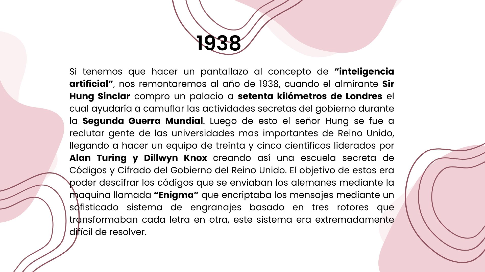
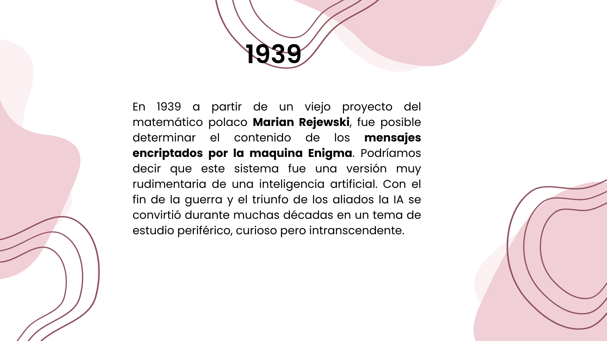
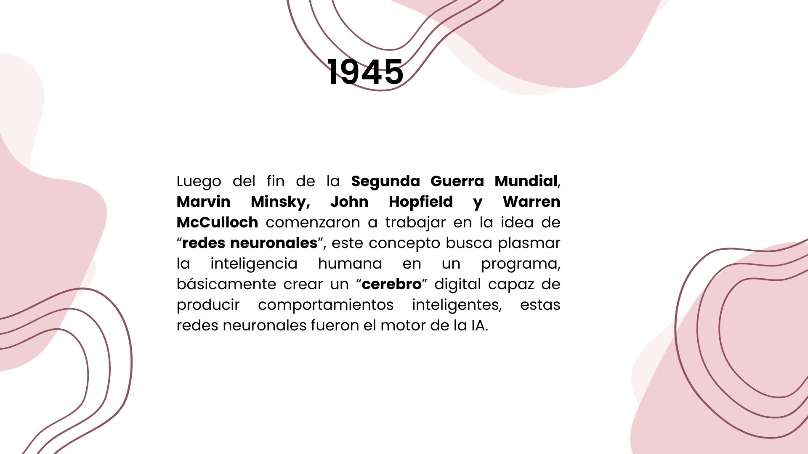
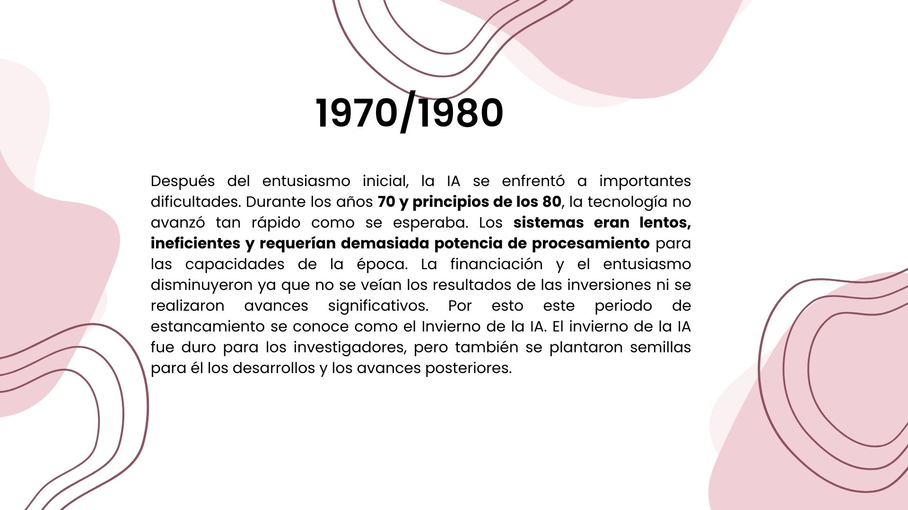
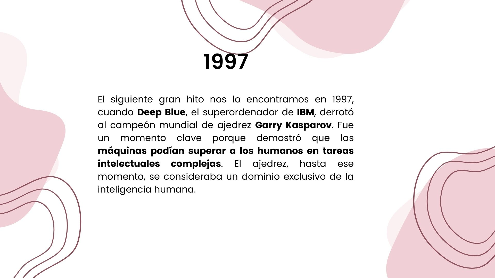
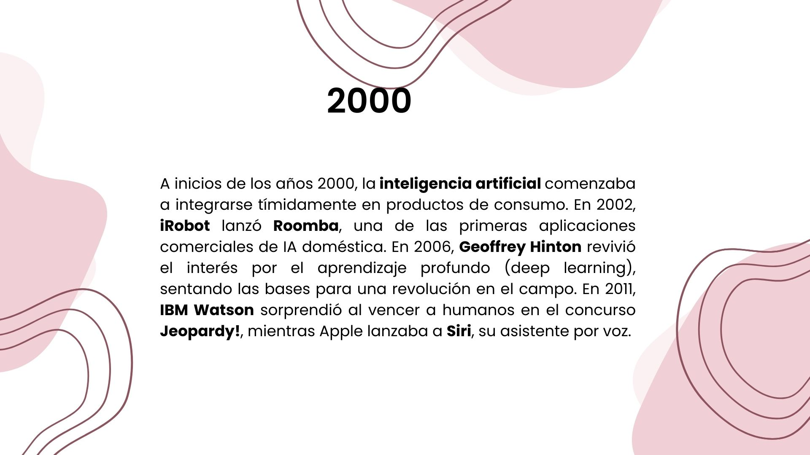
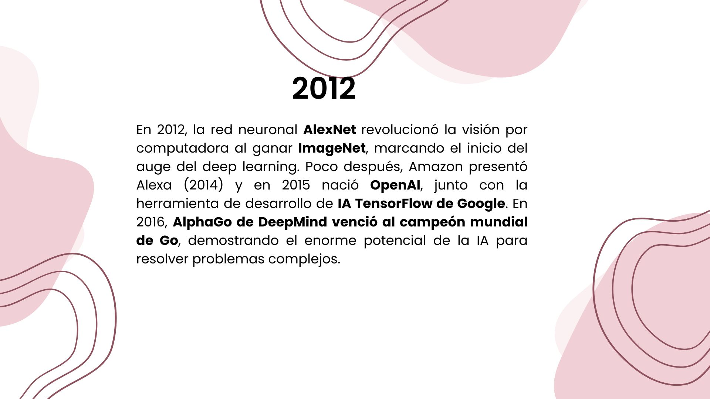
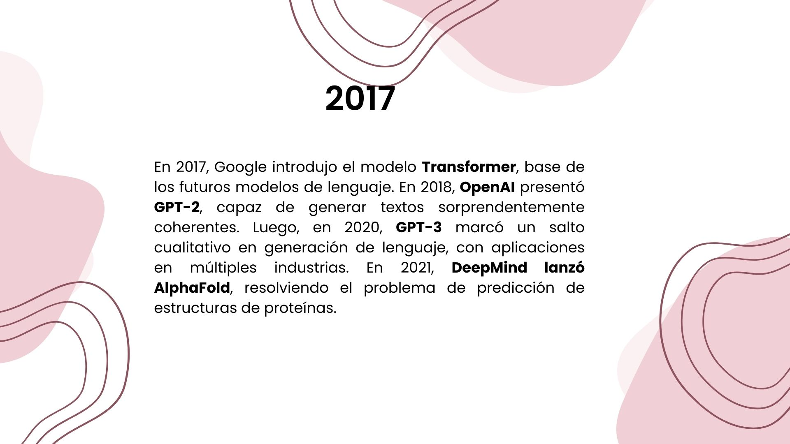
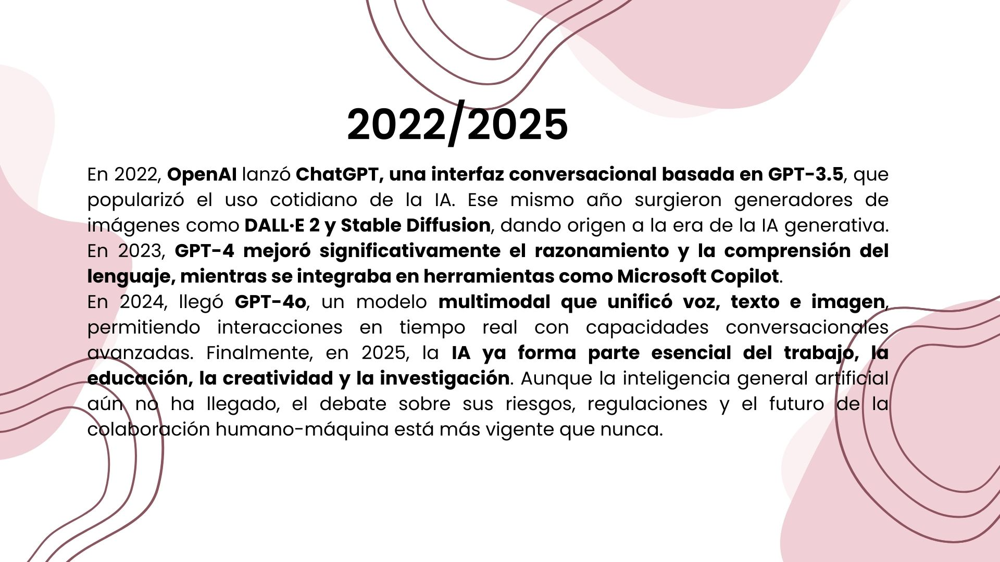

Tipo de Inteligencias Artificiales
Según su capacidad:
Se centra en tareas específicas y está diseñado para ser un asistente virtual o para ser un sistema de reconocimiento facial.
O "IA fuerte", son sistemas que tienen la capacidad de entender, aprender y aplicar conocimientos a diferentes tareas, de manera similar a como lo haría un ser humano.
Según su función:
Imitar el razonamiento y la toma de decisiones de un experto humano en un área específica, como diagnósticos médicos o análisis financieros.
Estos están inspirados en la estructura y función del cerebro humano, utilizados para reconocimiento de patrones, aprendizaje automático y procesamiento de datos complejos.
Es una rama del aprendizaje automático que utiliza redes neuronales profundas con muchas capas para analizar grandes cantidades de datos y extraer características complejas.
Se ocupa del diseño, construcción, operación y aplicación de robots, a menudo incorporando IA para tareas como la navegación autónoma o la manipulación de objetos.
Son entidades de software que pueden percibir su entorno, tomar decisiones y actuar de forma autónoma para lograr objetivos específicos.
Les permite a las computadoras comprender, interpretar y generar lenguaje humano, lo que facilita la interacción entre humanos y máquinas.
Les permite a las computadoras "ver" e interpretar imágenes y videos, similar a como lo hace la visión humana, con aplicaciones en reconocimiento facial, visión por computadora en vehículos autónomos, etc.
Es un tipo de IA capaz de generar contenido nuevo, como imágenes, texto o música, basándose en datos de entrenamiento.
¿Hay leyes que regulen el uso de IA en Argentina?
En Argentina, la regulación de la inteligencia artificial (IA) se encuentra principalmente en etapas de desarrollo, con varios proyectos de ley presentados en el Congreso para establecer un marco legal integral, además de normas administrativas y decretos que definen principios y lineamientos para su uso responsable y ético. Las leyes existentes, como la de Protección de Datos Personales (Ley 25.326) y el Código Penal, también se aplican al uso de la IA, aunque se buscan reformas específicas para abordar desafíos como la difusión de deepfakes.
Proyectos destacados
- Proyectos para un marco general: Se han presentado proyectos de ley para establecer un marco legal amplio para el uso responsable de la IA en el país, definiendo principios éticos y responsabilidades.
- Proyectos para usos específicos: Se han propuesto leyes para regular aspectos particulares, como el uso de IA para la difusión no consentida de imágenes de contenido sexual y el castigo de la creación de deepfakes (imágenes sexuales falsas).
- Proyecto sobre IA en la educación: Existe una iniciativa para establecer directrices claras sobre la integración de la IA en el ámbito educativo, buscando proteger datos y mejorar la calidad de la enseñanza.










Otros sitios para visitar